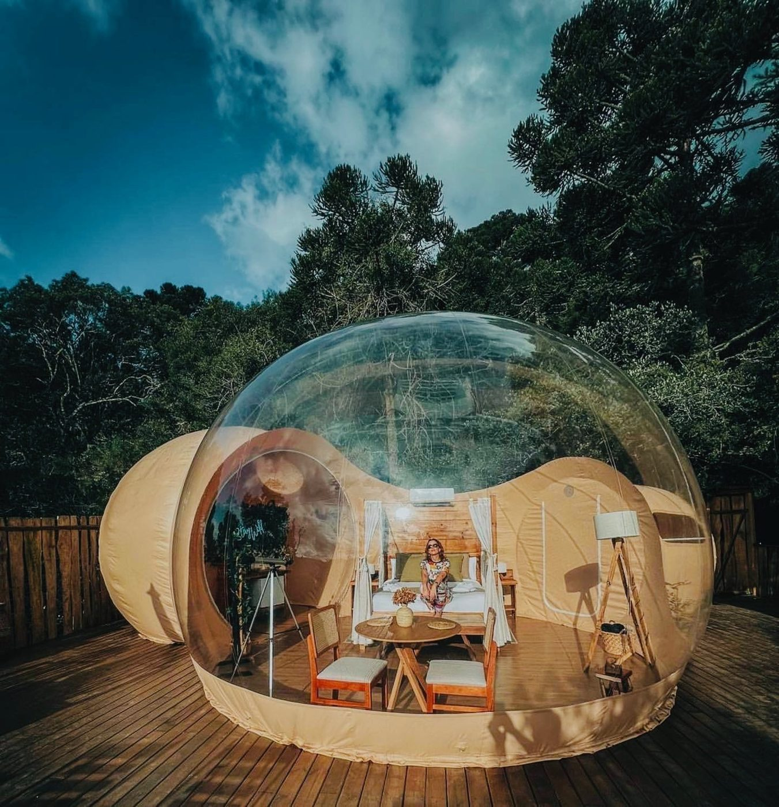
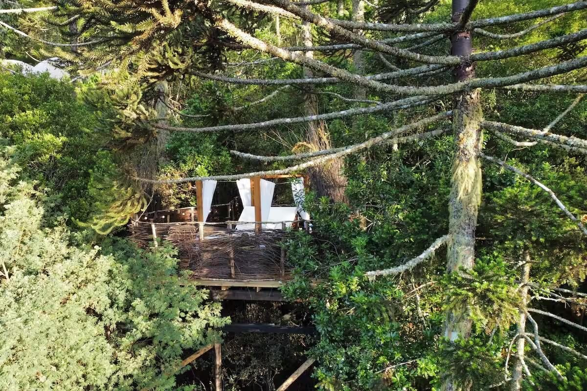
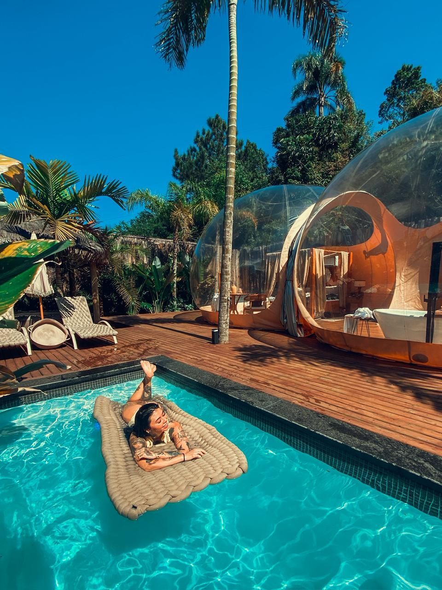
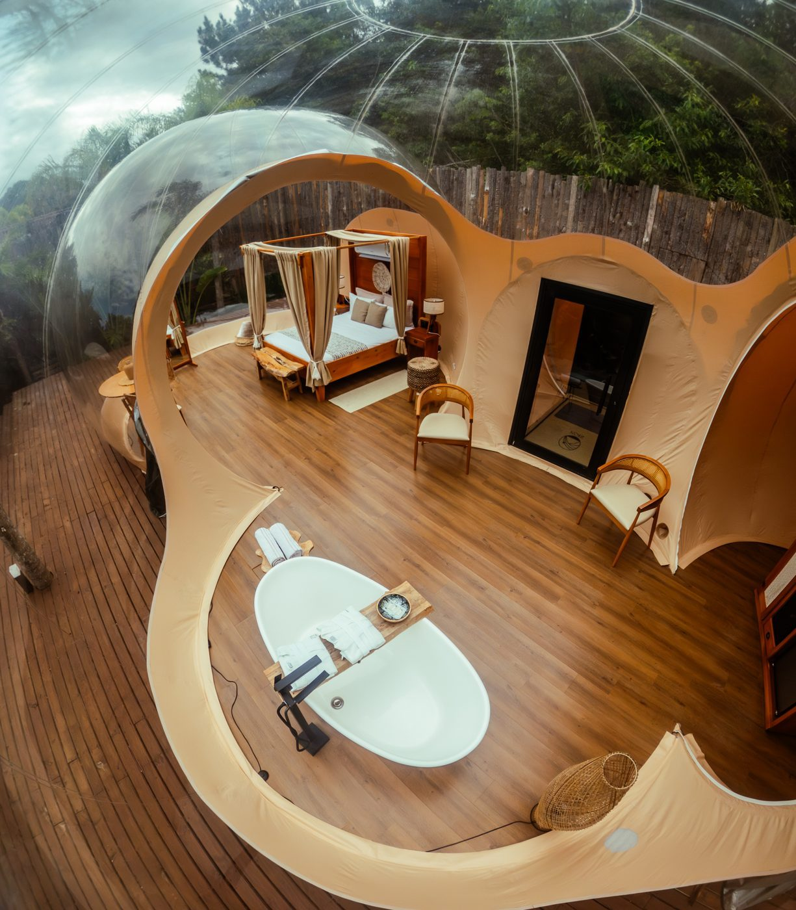
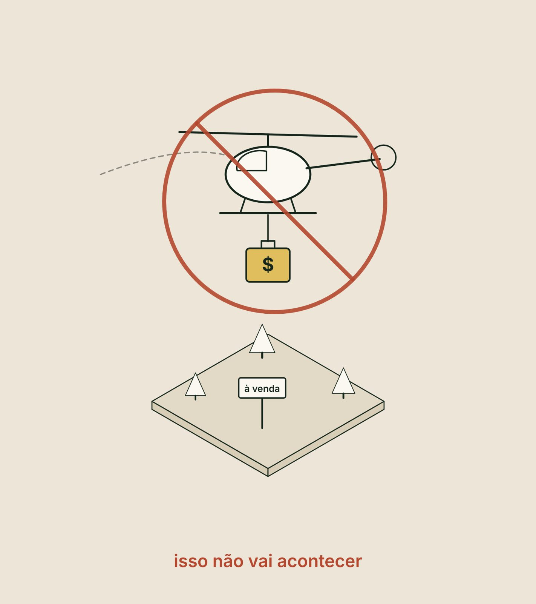
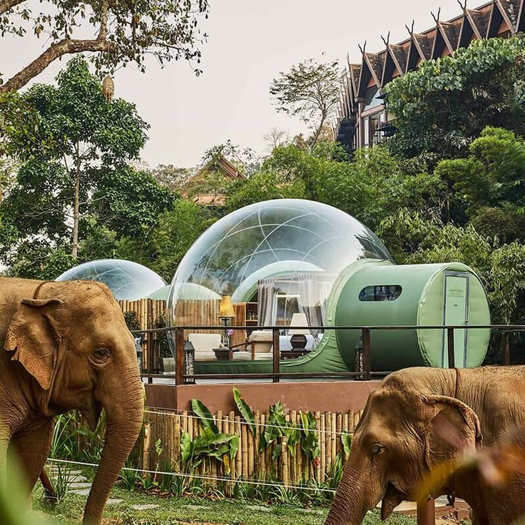
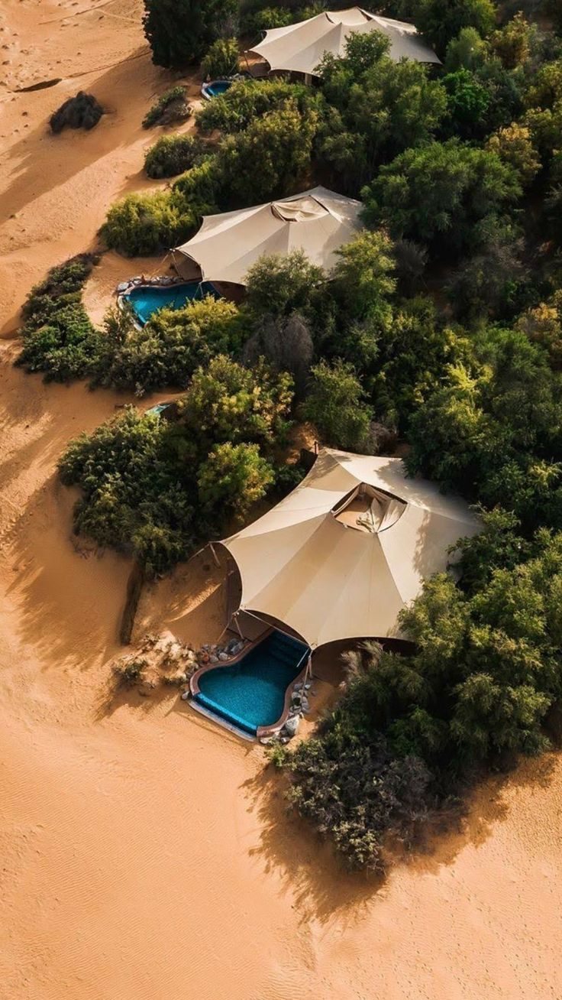
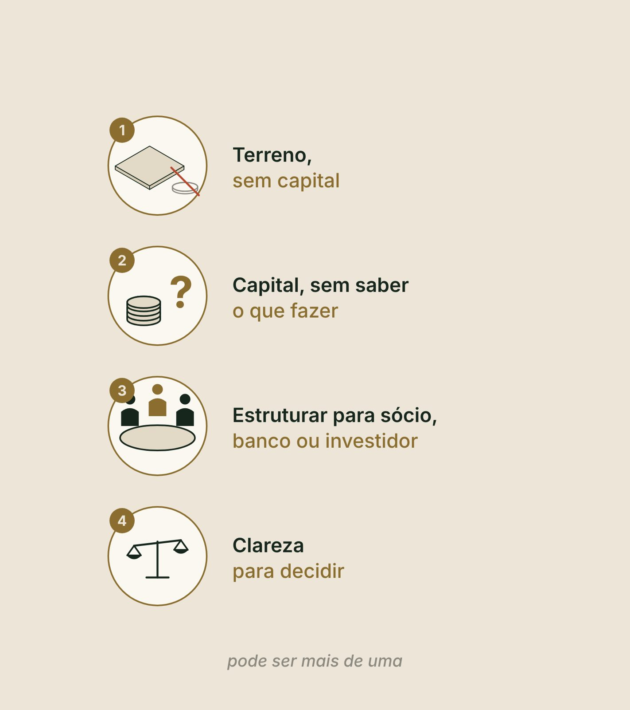
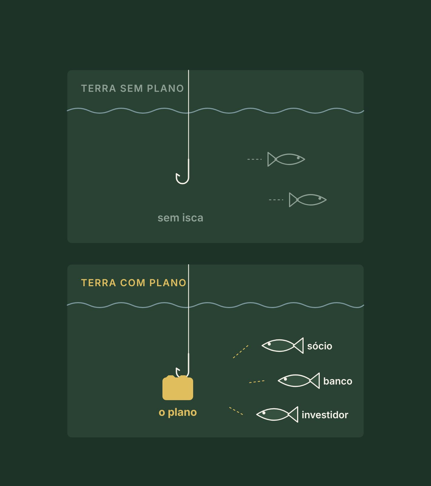
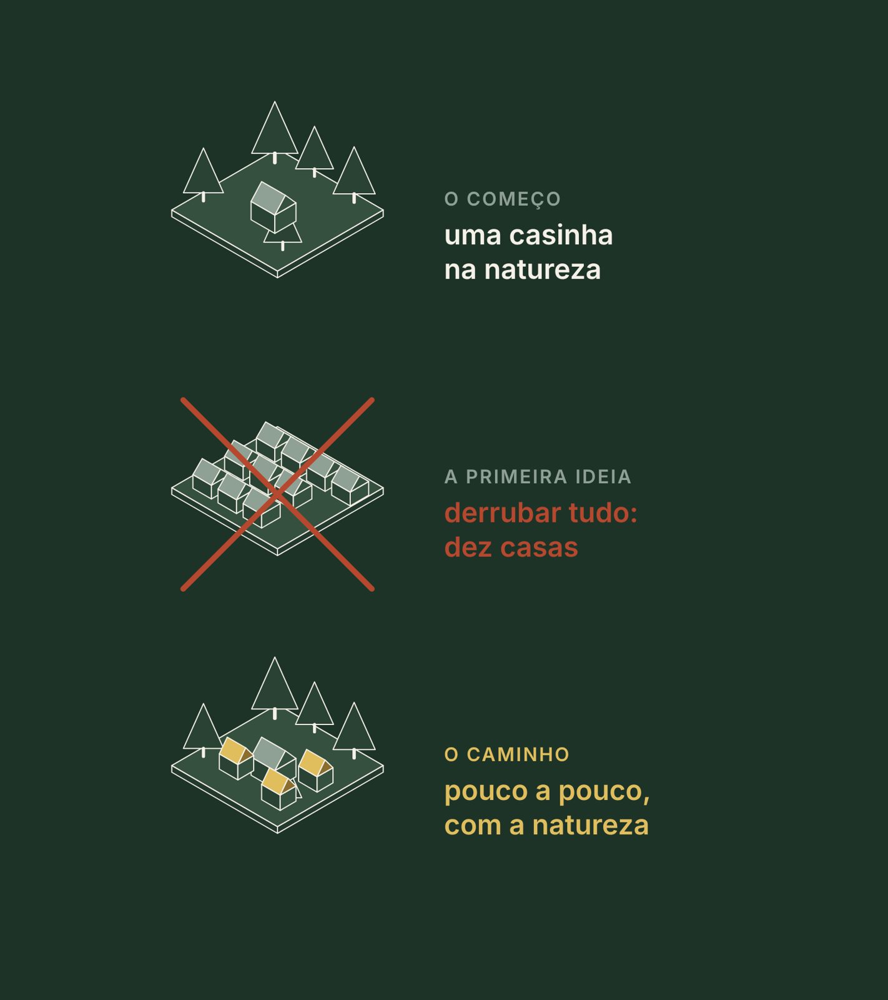

Transforme Seu Terreno em um Projeto de Hospedagem de Sucesso. Antes do primeiro pilar, a vista de cima.
Antes de construir
O papel suporta qualquer projeto.
01Pilar 1 · Território e destino
O seu terreno suporta o que está no papel?
02Pilar 2 · Mercado e demanda
O que está no terreno tem demanda?
03Pilares 3 e 4 · Produto e modelo
Para quem vamos vender?
04Pilar 5 · Masterplan faseado
O que cabe e o que entra na fase um?
05Pilar 6 · Pré-viabilidade
O retorno está alinhado com a minha perspectiva?
06Pilar 6 · Os três cenários
E se der errado? Como mitigar?
07Pilar 7 · Capital e Dossiê
Como estruturar isso?
08Pilares 4 e 7 · A decisão
Qual é o melhor caminho? Qual estratégia?
O Marco Zero em três respostas
O que, por quê e o que você leva
1
O que
O setor de hospedagem por inteiro, as quatro dores e a jornada: quatro etapas e sete pilares.
2
Por quê
Quase todo mundo começa pela obra. E a obra é o último passo.
3
Resultado
A página zero do seu Dossiê: o seu diagnóstico prévio, com a etapa por onde começar.
Antes de tudo, uma pergunta
O que te trouxe até aqui?
O terreno parado
O capital sem destino
Um sócio para convencer
A dúvida de qual caminho seguir
Guarde a sua resposta. Ela volta no bloco 2.
Bloco 1
A visão, quem somos e o setor de hospedagem
CuriosidadeAs grandes redes estruturam tudo antes de construir. O nosso método nasceu dessa lição.
ReflexãoSe você começasse amanhã, qual seria o seu primeiro gasto?
DicaTenha papel e caneta. Três respostas suas voltam no diagnóstico do fim.
Tudo começa assim
Tudo começa de uma visão
Existe um caminho, que outras pessoas já trilharam, erraram e refizeram.
Faltava a leitura de como fazer, quanto gastar e quanto retorna. Por isso nós, da Zion, criamos esta mentoria.
E para abençoar vidas e expandir o setor: que você prospere com o que tem nas mãos, e que quem se hospeda encontre descanso e natureza.
Antes de investir um real
Cinco perguntas. Clique em cada uma.
Visão
Virar
Quer saber
O que você vai construir?
Demanda
Virar
Quer saber
Existe mercado para isso?
Tempo
Virar
Quer saber
Em quanto tempo?
Modo
Virar
Quer saber
Com que conhecimento e estratégia?
Resultado
Virar
Quer saber
O que isso te devolve?
Não basta ter uma visão. Tem que estar preparado.
Ao vivo · equalize as cinco perguntas
Diagnóstico · não é nota
Quantas você já responde com número?
Com número
A que mais te falta
"Com número" é quando a resposta está por escrito ou com conta. "Tenho uma ideia" é quando você imagina, mas ainda não conferiu.
Ajustado ao vivo
Quem somos
O que a gente ensina, a gente opera
Mais de vinte anos de hotelaria internacional: Meliá, Barceló e Wyndham, na Espanha, nas Canárias e nas Baleares.
A Zion no mercado nacional de hospedagem desde 2020.
O fundador, Bruno Chaerk, é embaixador e palestrante do Clube de Negócios Hotéis e Resorts.
A linha do tempo · clique em cada fase
Como o método nasceu
Clique em cada fase: o que foi e o que ela ensinou.
As operações da Zion · Zion Bubble Glamping
Duas sedes, dois biomas, a mesma marca

Na serra · a mata de araucáriasÀ noite

O deck na floresta

No litoral · a piscina entre as bolhas

Por dentroVista de cima
Zion Hotel Group International
Quatro braços, um só caminho
Desenvolvimento: estrutura empreendimentos, do território à captação.
Produtos: a Zion Glamping Store, inclusive a Bubble.
Gestão hoteleira: estrutura a operação e opera.
Educação: o Método Zion, que começa agora.
Vinte e três destinos mapeados para a expansão. O nosso papel não é o do arquiteto nem o do engenheiro: é desenvolver, estruturar e ofertar.
A tese da Zion
Existe dinheiro. O que não existe são empreendimentos bem estruturados.
Não falta terreno, não falta dinheiro: falta estratégia.
A síndrome do terrenista
"A minha terra é única." E ela é.
Só que o Brasil é commodity: o que mais tem aqui é terra. E terra sem plano.
O terrenista espera um empresário de helicóptero, com uma mala de dinheiro: "achei o seu terreno".
Isso não vai acontecer. Sabe por quê? Porque não existe um plano.

Plano não é só projeto arquitetônico
Um plano completo tem três partes
Projeto
O que responde?
Responde
O que vai ser construído.
Execução
O que responde?
Responde
O que fazer, em que ordem, com quem.
Viabilidade
O que responde?
Responde
Quanto custa, quanto entra e quando volta.
Às vezes o empresário do helicóptero é você mesmo: tem a terra e o dinheiro. O que falta é conhecimento.
E o risco? Sempre existe. A pergunta certa é: o que eu faço para ficar menos arriscado? O risco se mitiga com plano.
Para onde o hóspede está indo
As pessoas pagam pelo que vivem
US$ 2,1 triA economia da experiência até 2032
73%Dos viajantes considerariam atividades calmas na natureza
10,6% ao anoO crescimento estimado do glamping no mundo
Projeção não é garantia: mostra a direção. Fontes: Bloomberg (2024), citado por Empower; Booking.com, Travel Predictions 2026; IMARC Group, Glamping Market Report 2025-2034.
O Airbnb transformou quem tinha uma casa em anfitrião
O que você vai fazer com o seu imóvel?
Renda
Alugar por temporada
Como funciona?
Como funciona
Você aluga o imóvel, por até 90 dias, sem serviço de hotel.
Renda
Hospedar
Como funciona?
Como funciona
Você hospeda, com serviço, e cobra diária.
Venda
Vender unidades
Como funciona?
Como funciona
Você vende cada apartamento ou chalé.
Venda
Vender frações
Como funciona?
Como funciona
É a multipropriedade: você vende tempo de uso.
Cada caminho tem a sua conta, a sua lei e o seu jeito de operar.
Fontes: Lei 8.245/1991, art. 48 (temporada, até 90 dias); Lei 11.771/2008, art. 23 (meios de hospedagem).
Quiz relâmpago
Aluguel por temporada e hospedagem são a mesma coisa?
Saber o nome certo muda a conta, a lei e o jeito de operar. O enquadramento do seu caso, quem confirma é o advogado, o contador e a prefeitura.
O mapa da hospedagem
Muitos jeitos de hospedar
Hotel
Recepção e diária, com ou sem alimentação.
Resort
Hotel com lazer, bem-estar e natureza no próprio lugar.
Hotel fazenda
No campo, com a vivência da roça.
Pousada
Até 30 unidades, com recepção e alimentação.
Cama e café
Na casa do dono, até 3 unidades, com café.
Flat
Unidade com cozinha, num prédio com serviço de hotel.
Hotel histórico
Num prédio preservado.
Hotel de estrada
Para quem está de passagem.
Temporada
Casa ou chalé alugado, sem serviço de hotel.
Glamping
Conforto de hotel com a natureza como experiência.
Fontes: Portaria MTur 100/2011, art. 7º; Lei 8.245/1991, art. 48. Hotel de estrada, temporada e glamping não são tipos da Portaria.
Vamos falar do que a gente vive
Glamping não é a bolha
Glamour com camping: nasceu das barracas. A bolha é uma das estruturas.
O chalé só alugado, sem serviço, não é glamping: está mais para aluguel por temporada.
E glamping não é propriedade: é barraca, de luxo. Serve para renda e para testar o destino.
Na praia

Na selva

No desertoUm ofurô na floresta
Pare e pense · o que você acha?
O hóspede de hoje compra o quê?
Todas são válidas: existe hóspede para cada uma. A pergunta é qual você escolhe, porque é essa decisão que define o produto, o preço e o tipo de hóspede que vai chegar até você.
Antes do bloco 2 · 4 minutos
Três linhas no seu papel
1Escreva em uma linha o que você quer construir.
2Das cinco perguntas, marque quais você responde com número.
3Escreva o nome certo do seu negócio: alugar, hospedar ou vender, e o jeito de hospedar.
4:00
Guarde a folha: ela volta no diagnóstico do fim.
Bloco 2
As dores, a jornada e o seu diagnóstico
CuriosidadeGrande parte de quem chega até nós já construiu, e ficou com o calendário vazio.
ReflexãoLembra da pergunta do começo? O que te trouxe até aqui?
DicaPode ser mais de uma dor. Anote a que mais pesa hoje.
Pare e anote
Qual é a sua dor?
Tenho o terreno e não tenho o capital
Tenho o capital e não sei o que fazer
Preciso estruturar para entrar com um sócio, um banco ou um investidor
Preciso de clareza para decidir
Pode ser mais de uma. Quem não dá nome à própria dor compra a solução errada.

Dor 1 · o milionário descapitalizado
Tenho a terra. Não tenho o capital.
Milhões em terra e nenhum dinheiro para desenvolver.
Linha sem isca não traz peixe. O plano é a isca.
Sem um empreendimento estruturado, o sócio, o banco ou o investidor não vem.

Dor 2
Tenho o capital e não sei o que fazer
Ouviu que todo mundo estava ganhando dinheiro com chalé. Comprou, construiu, e o calendário ficou vazio.
Não errou por falta de dinheiro. Errou por decidir fora de ordem.
Uma decisão tomada fora de ordem custa o dobro.
Dor 3 · "tenho uns amigos que querem fazer comigo"
Eles sempre fazem as mesmas perguntas
Qual o melhor produto?
Onde se responde?
No curso
Pilar 3 · Produto e tipologias: o que eu vendo, e para quem.
Quanto custa?
Onde se responde?
No curso
Pilar 6 · Pré-viabilidade: quanto custa abrir a porta.
Quanto retorna?
Onde se responde?
No curso
Pilar 6 · os três cenários. Receita bruta não é lucro.
Em quanto tempo?
Onde se responde?
No curso
Pilar 6 · o tempo de volta do dinheiro.
Quantas você responde hoje, com número?
Dor 4
Preciso de clareza para decidir
Qual modelo, qual produto, quanto investir, sozinho ou com alguém. Esse é o grande objetivo deste curso.
Não é a Zion que decide por você. É você, com os números na mão.
Você não precisa de um grande hotel para começar
Fruta alta, fruta baixa
A fruta alta: o sonho grande, o resort de cinquenta quartos.
A fruta baixa: uma, duas ou três unidades, para testar o mercado e a operação.
De menos a mais. A fruta baixa ajuda a pagar a escada até a fruta alta.
Um caso real
Rodrigo e Priscila
A primeira ideia: derrubar tudo e construir dez casas.
Mas o diferencial estava na natureza do lugar. Os chalés vieram pouco a pouco.
A pousadinha para surfistas virou um negócio de luxo natural, com padrão, marca e diferenciação.

Exemplo ilustrativo · a Marina, que nos acompanha nos sete pilares
No terreno da Marina, o limite físico permite 12 unidades, a água 10, a experiência 7 e o mercado 5. Quantas ela faz?
Cinco, pelo mercado. A capacidade é sempre o menor dos quatro limites, não a média.
Capacidade · o menor de 12, 10, 7 e 55 cabanas
Fase um · o mercado compra, mas não cinco agora3 cabanas
Fase dois · esperam o gatilho: demanda, caixa e maturidade+ 2
Ao vivo · a escada de começar pequeno
Exemplo ilustrativo
Quantas o lugar aguenta, e quantas primeiro
fase umespera o gatilhoacima da capacidadecabe, mas o lugar não aguenta
Capacidade, o menor dos quatro
Depois, com gatilho:
Ajustado ao vivo
A regra de Pareto
Poucas decisões fazem quase todo o resultado
Onde?
Qual pilar?
Pilar 1
Território e destino.
Para quem?
Qual pilar?
Pilares 2 e 3
Mercado e demanda; Produto e tipologias.
O quê?
Qual pilar?
Pilar 3
Produto e tipologias.
Em qual modelo?
Qual pilar?
Pilar 4
Modelo de negócio.
Com qual conta?
Qual pilar?
Pilares 6 e 7
Pré-viabilidade; Capital e Dossiê.
Todas vêm antes da obra.
Princípio de Pareto: uma regra prática de prioridade, não uma conta exata.
Do terreno ao Dossiê de Desenvolvimento · clique em cada etapa
Quatro etapas, sete pilares, na ordem
Clique em cada etapa: o que ela responde e por que vem nessa ordem.
Cada pilar fecha com um Faça agora e uma página do Dossiê. No fim: sete páginas e uma decisão escrita, avançar, ajustar ou parar.
O Método Zion 360°, na ordem de um projeto real
O produto é só uma das partes
1
Desenvolvimento
Este curso. Do terreno ao Dossiê de Desenvolvimento, com a decisão.
2
Gestão
O Dossiê vira estrutura: contratos, sociedade, licenças e a conta com cotações.
3
Operação hoteleira
Da obra à operação que funciona: implantação, pessoas e o manual dos serviços.
4
Aceleração de vendas
Para o calendário encher: marca, canais, preço e reserva direta.
Cada parte tem sete pilares. Juntas, formam o Plano Mestre do seu empreendimento.
Ao vivo · o diagnóstico prévio em uma tela
Diagnóstico · não é nota
A sua dor
As cinco perguntas
A jornada · o que você já tem
Perguntas com número
Páginas que você já tem
Comece pelo
Ponto mais frágil
Ajustado ao vivo
Com o Dossiê pronto
Três caminhos se abrem
Fazer sozinho, usando o Dossiê como régua.
Levar a um banco, a um sócio ou a um investidor.
Conversar com a Zion. A Zion avalia cada caso.
Land Bank Zion: uma lista de terrenos com o Dossiê feito. Estar na lista quer dizer que o projeto pode ser olhado. Não quer dizer que será escolhido, financiado ou vendido, nem que terá sócio.
Antes do Faça agora · 4 minutos
A sua dor, a sua fruta baixa e a sua etapa
1Escreva a sua dor com nome, e o número dela.
2Escreva a sua fruta baixa: quantas unidades você testaria primeiro, e por quê.
3Marque a etapa onde você está hoje: ler o lugar, desenhar o produto, desenhar o terreno ou fechar a conta.
4:00
Junto com as três linhas do bloco 1, você já respondeu quase todo o diagnóstico.
Revisão · responda de cabeça
Qual é o último passo de um empreendimento de hospedagem?
Quase todo mundo começa pela obra, e a obra é o último passo. Antes dela vêm o território, o mercado, o produto, o modelo, o masterplan e a conta.
Revisão · responda de cabeça
O que faz o sócio, o banco ou o investidor chegar?
O plano é a isca. Terra sem plano não atrai ninguém, e nem um plano completo é garantia de sócio ou de crédito.
Faça agora · a página zero do seu Dossiê
O seu diagnóstico prévio
1Responda. Uma pergunta por tela: a sua situação, a sua dor e as cinco perguntas antes de investir.
2Marque a jornada. De cada pilar: já tenho, em parte ou não sei. "Não sei" também é diagnóstico.
3Baixe o seu PDF: por qual pilar começar, o ponto mais frágil e a primeira ação de 7 dias.
6:00
Na área de membros: Faça agora · O seu diagnóstico prévio
O Marco Zero em uma tela
O que ficou
Tudo começa de uma visão, mas visão sem plano fica no sonho.
Não falta terreno, não falta dinheiro: falta estratégia. O plano é a isca.
Alugar, hospedar e vender são negócios diferentes, com contas e leis diferentes.
Quem não dá nome à própria dor compra a solução errada.
De menos a mais: a capacidade é o menor dos quatro limites, e a fruta baixa vem primeiro.
Quatro etapas, sete pilares, uma decisão escrita. A obra é o último passo.
Próximo · Pilar 1
Território e destino
O checklist do seu terreno: o destino em volta, a chegada do hóspede, o chão, a água, a energia, a área que sobra e os papéis. Item por item, onde verificar e com quem.
Conteúdo educacional. Não é oferta de investimento nem promessa de renda, lucro, retorno, ocupação, crédito, sociedade ou venda. A Zion avalia cada caso. A Marina é um exemplo ilustrativo. Projeções de mercado mostram uma direção, não garantem resultado. Temas jurídicos aparecem em nível introdutório: quem confirma no seu caso é o advogado, o contador ou a prefeitura.